La estación de trasbordo entre tu archivo personal y una sola paleta
Proun toma imágenes de cualquier origen (una radiografía de museo, una foto de la prepa, un cianotipo de 1843) y las obliga a existir en el mismo registro tonal. No decora tus fotos: las recompone.
En 1923, El Lissitzky sacó el Proun del cuadro y lo volvió cuarto: el Prounenraum, una sala entera en la Gran Exposición de Arte de Berlín. Esta página se recorre igual, en tres salas y una colección. Todo lo que cuelga aquí lo generó el motor, y cada ficha dice con qué receta y qué semilla volver a sacarlo.
“La estación de trasbordo entre la pintura y la arquitectura.” El Lissitzky, sobre sus Proun, 1919
sala 01 / 03
Sala clara
Tinta sobre papel: lo claro desaparece y lo oscuro se acumula.
Penrose
01Figuras isométricas a tres colores por cara (un colormap de tres paradas: derecha, izquierda, arriba), sobre fotos de museo pasadas a tinta con multiply. El triángulo es imposible: su tercer brazo se pinta como si estuviera detrás del primero.
1920 × 1080 px · 3 tintas: #141210 + #d94f3d + #e2dccf · semilla 940143726
ver receta
python main.py --spec json/penrose.json
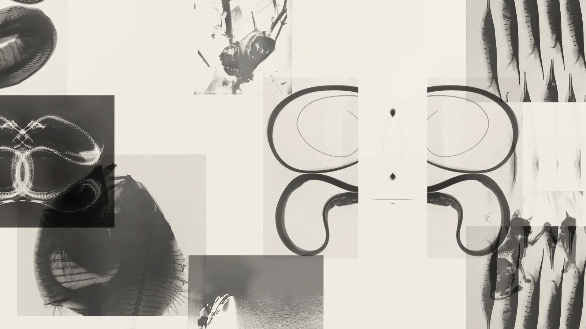
Tinta
02Radiografías invertidas y espejadas sobre sí mismas, de donde salen las mariposas. Solo lo oscuro de cada foto sobrevive.
1920 × 1080 px · color principal #1c1c1c · semilla 246884557
ver receta
python -m recetas.tinta --seeds 246884557 --colors 1c1c1c --resolutions 1920x1080
sala 02 / 03
Sala oscura
Baja despacio: la misma luz, reducida a seis clases.
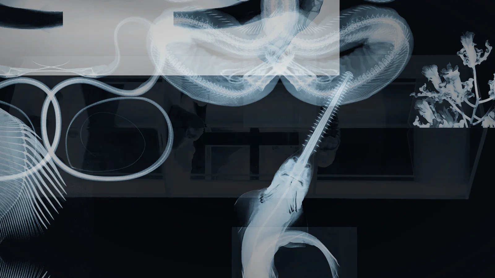
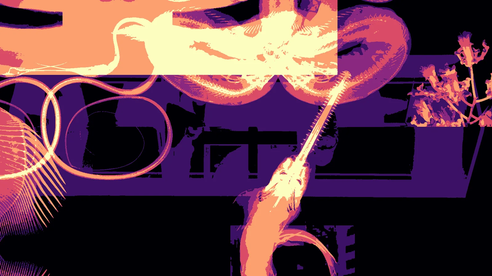
Vitrina
03Radiografías en luz sobre oscuridad, acumuladas con screen.
color principal #7fb6d9 · semilla 959423107
ver receta
python -m recetas.vitrina --seeds 959423107 --colors 7fb6d9 --resolutions 1920x1080
Vitrina en k-means
04La misma pieza clasificada en 6 clases y pintada de oscura a clara con magma, con filtro de mayoría de 3 × 3.
6 clases · magma · semilla 959423107
ver receta
python recolorear.py vitrina.png --kmeans 6 --name magma --smooth 3
sala 03 / 03
Cuatro tintas
Sigue bajando: las cuatro planchas entran en registro.
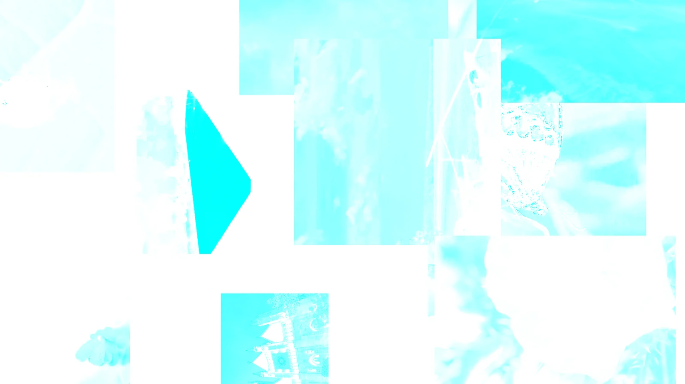
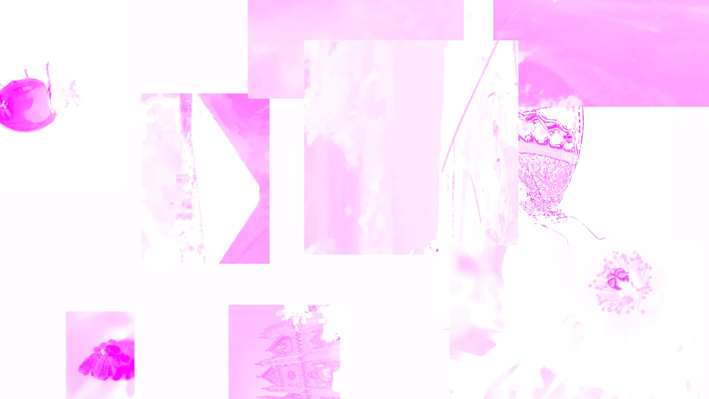
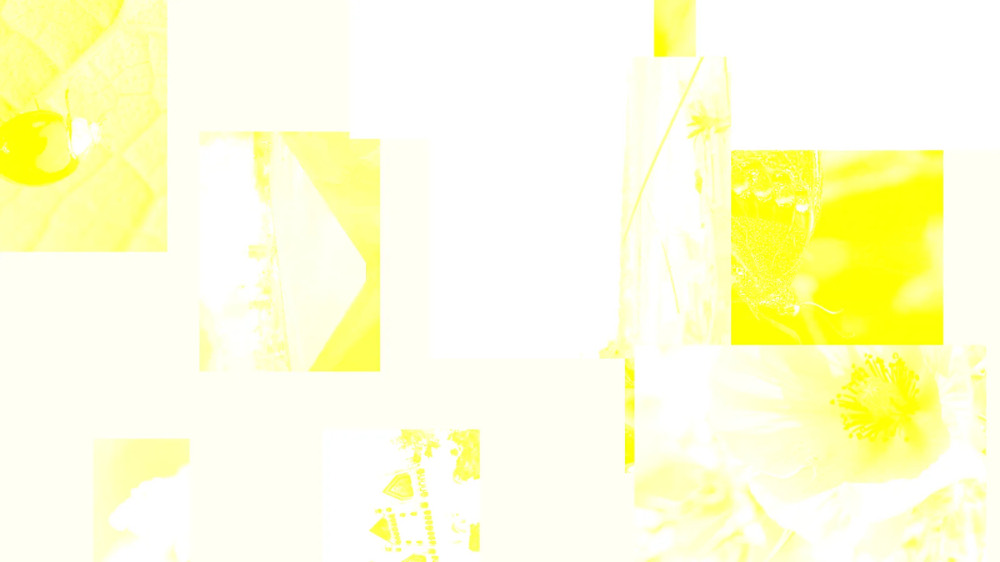
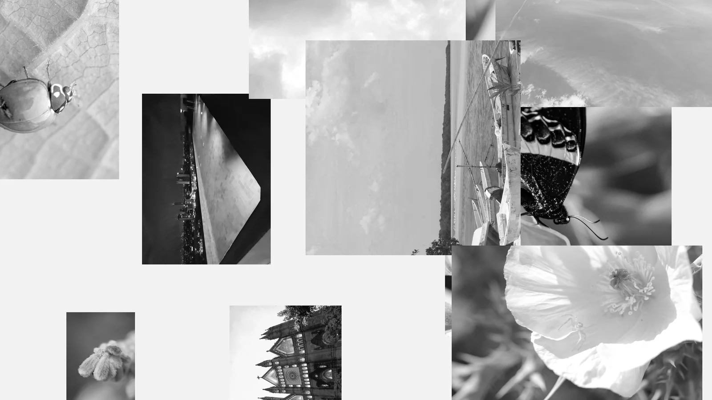
c + m + y + k, multiplicadas sobre el papel
Cuatricromía
05Un collage a color separado en cuatro planchas con negro real: K es lo que le falta al canal más brillante para llegar a 255, y cada tinta es lo que le falta a su canal para alcanzar ese máximo. Sobrepuestas por multiplicación, como la tinta sobre el papel, vuelven a dar la imagen.
1920 × 1080 px · 4 tintas: c + m + y + k · semilla 254619158
ver receta
python main.py --spec json/cuatricromia.json
# y por plancha, una sola tinta encendida:
recolor: {"mode": "channels", "channels": {"c": [1, 0], "m": [0, 0], "y": [0, 0], "k": [0, 0]}}
colección · 8 piezas
Colección
Desliza: cada una dice de qué está hecha.
Penrose
Figuras isométricas a tres colores por cara sobre fotos de museo en tinta.
iso · colormap de 3 paradas · 940143726
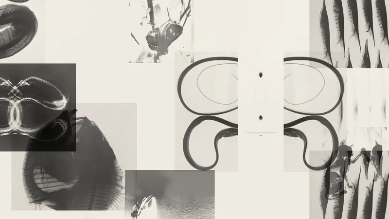
Tinta
Radiografías invertidas y espejadas, multiply sobre papel con manchas.
duotone · multiply · 246884557
Vitrina
Luz sobre oscuridad: el extremo oscuro de cada foto se vuelve transparente.
duotone · screen · viñeta · 959423107
Vitrina en k-means
La vitrina clasificada en seis clases, de oscura a clara, con magma.
kmeans 6 · magma · mayoría 3 × 3
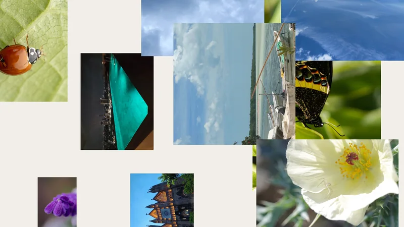
Cuatricromía
Collage a color sin recolorear, la base de las cuatro planchas.
recolor none · scatter · 254619158
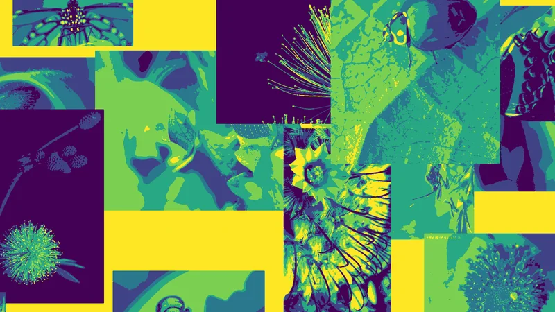
Campus en k-means
Insectos y plantas del campus, clasificados en seis clases y pintados con viridis.
kmeans 6 · viridis · 520953710
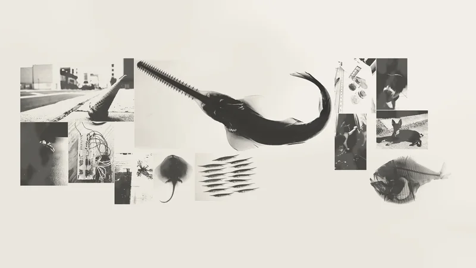
Alineada
Empaquetado tipo estantería: cada pieza toca a sus vecinas, sin solaparse.
layout align · multiply · 246884557
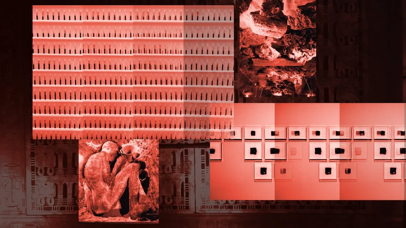
Retícula
Cuadrícula con giros en 90°, duotono en rojo sobre degradado oscuro.
layout grid · duotone · 35290012
Por qué se llama Proun
En 1919, El Lissitzky empezó a llamar Proun a unos objetos que no eran ni cuadros ni edificios. La sigla rusa decía Proyecto para la afirmación de lo nuevo, aunque él prefería explicarlo como la estación de trasbordo entre la pintura y la arquitectura: una estructura que existía en varios planos a la vez.
Klutsis, Ródchenko y Kulagina llevaron el mismo principio al fotomontaje: fragmentos fotográficos ajenos, aplanados a una sola tinta, obligados a compartir una superficie que ninguno pedía compartir.
Cómo lo hace
Cada imagen se normaliza tonalmente antes de mapearse a un color. Cualquier color puede volverse transparente: de ahí sale la polaridad, tinta oscura sobre papel o luz sobre oscuridad, del mismo mecanismo.
El acomodo puede ser al azar, en cuadrícula, o empaquetado por bordes como una estantería. Las semillas hacen que el mismo wallpaper se pueda regenerar en cualquier resolución o color.
Instala Pillow
Es la única dependencia del motor.
pip install -r requirements.txt
Pon tus imágenes en fuentes/
O donde prefieras; se declara en la configuración.
Corre la herramienta
python main.py --images fuentes/ --resolutions 1920x1080 --spectrum 6 --count 4
O edita CONFIG dentro de main.py y corre python main.py sin más.
O abre el editor
La API en FastAPI y el frontend en Vite, cada uno en su terminal:
pip install -r api/requirements.txt uvicorn api.main:app --reload --port 8030 cd frontend && npm install && npm run dev
Además de CONFIG en main.py, Proun lee especificaciones completas en JSON con --spec. Es la misma estructura de datos en los dos casos; el JSON solo evita abrir un editor de Python. Viven en json/, y el editor exporta las suyas en el mismo formato.
json/exp.json
Varios parámetros activados a la vez (crop, giro libre, repetición espejada, mancha propia, transparencia) para comparar el efecto acumulado.
json/examen.json
La receta completa que reconstruye el fondo de referencia: manchas reales, radiografías, cianotipos, el bloque alineado.
json/penrose.json
Figuras isométricas con colores por cara y fotos en tinta: la primera obra de la sala clara.
json/ss4.json
Una receta con la semilla fija: siempre reproduce el mismo wallpaper, byte por byte.
python main.py --spec json/exp.json
Árbol de archivos, dependencias reales entre ellos, y clases/métodos del motor, generado con Ariadne directamente del código de este repositorio. Arrastra para moverte, gira la rueda para acercar, haz clic en un nodo para ver su detalle.